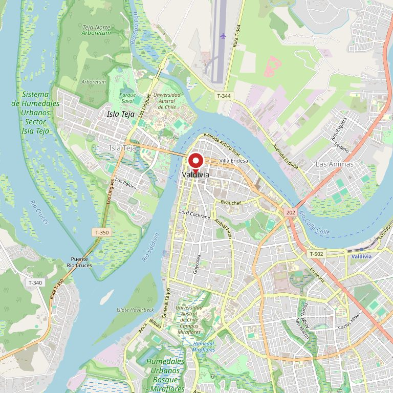

Construcción
- S Cemento, arena y ripio
- S Fierro, malla y perfil
- S Plancha de zinc y OSB
- P S Tabique y volcanita
Ferretería Sur
Valdivia · dos locales · desde el mostrador
Lo que se maneja en los dos locales, por familia y con la marca de dónde está cada cosa. Para no manejar hasta Picarte y descubrir que había que ir a Schneider.
FOTO 1 · un pasillo del local o la fachada de Picarte
01
Dos locales grandes tienen una ventaja y un problema: hay de todo, pero no todo está en los dos. Esto es lo que resuelve el viaje antes de hacerlo.
Y lo que no está en la lista: se pide. Pero eso se avisa en el mostrador con un plazo, no se promete por internet. Un catálogo sirve cuando dice la verdad — incluido lo que hay que encargar.
02
Local P
1.000 reseñas en Google
El local de calle. Herramienta, fijaciones, pintura, eléctrico y todo lo que se lleva en la mano. Es el que conviene cuando se va caminando o con el auto normal.
Local S
817 reseñas en Google
El de materiales. Cemento, fierro, planchas, áridos y todo lo que se carga. Hay espacio para maniobrar y cargar el vehículo.
Mil ochocientas reseñas entre los dos. Es de las ferreterías más grandes de Valdivia por volumen de gente que la califica.
FOTO 2 · la bodega de Schneider o el mostrador atendiendo
Eso es todo lo que hay hoy en ferreteriasur.cl: un aviso que dice que renovaron sus espacios en Valdivia y que el sitio viene pronto. El pie de página marca 2025.
Mil ochocientas personas calificaron estos dos locales, y quien busca la ferretería en Google llega a una promesa. La página no está pendiente de diseño: está pendiente de existir.
03
Ferretería Sur atiende a Valdivia desde dos locales: uno de calle y uno de materiales. La clientela va del maestro que compra tres tornillos al contratista que carga una camionada de cemento.
Que existan dos locales no es un detalle administrativo: es la forma de tener herramienta fina y áridos al mismo tiempo sin que ninguna de las dos cosas moleste a la otra.
04
FOTO 3 · la fachada de Picarte, desde la vereda
Antes de manejar, llame. Con dos locales, una pregunta de treinta segundos ahorra el viaje equivocado — y es exactamente lo que un catálogo publicado dejaría de tener que preguntarse.
